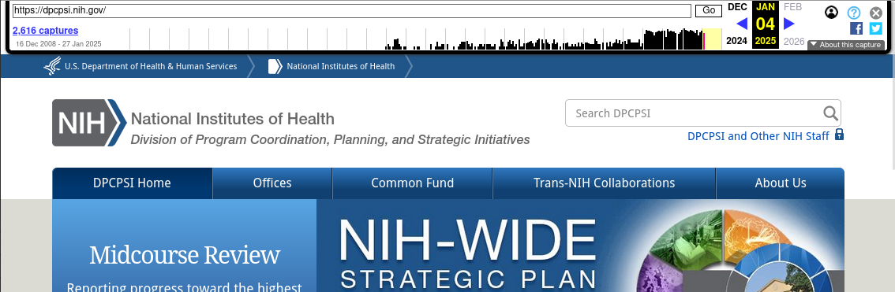

5 Downloading from the Internet Archive
5.1 Using the Wayback Machine web interface
The Wayback Machine web interface can be accessed by navigating to https://archive.org. More comprehensive information about the Wayback Machine is available on the Internet Archive website.
5.1.1 The search bar
To search for content, use enter text into this search bar and press “Enter”:
The text can either be:
- A complete URL pointing to a page that you want to view captures of, or
- A url prefix, i.e. the beginning of the URL up to the point that you typed. The prefix itself must be a valid path on its own (i.e. end with a
/).
After submitting your query, you will be presented with a page similar to the one shown below.

The most relevant parts of this page are the different tab links (starting with “Calendar”), the capture graph, and the capture calendar.
5.1.2 The Calendar tab
By default, if you entered the URL of a page, you will be presented with the Calendar tab which will show the year of the most recent capture. Use the graph at the top to change the year. The graph is a histogram showing the relative frequency of captures per month.
To view a capture, mouse over one of the days bubbled in green or blue. A window will pop up listing the times of captures made on that day:
Clicking on one of these will bring you to that capture.
5.1.3 Capture pages
Capture pages will show how the page looked at the time of the capture. You can navigate these pages as you would a normal webpage and links will be substituted with Wayback Machine captures where possible.
In addition, the Internet Archive adds a toolbar at the top of each page to aid in navigation:

You can navigate through different captures by:
- Clicking the link at the top left listing the number of captures, which will take you back to the calendar page;
- Clicking on one of the months in the graph, which will take you to the first capture in that month; or
- Using the left and right blue arrows (if any) at the top right, which will take you to the closest capture either before or after the one currently being viewed.
5.1.4 The Site Map tab
From the main results page, you can click on “Site Map” to view the site map graph, which illustrates the different paths that branch from the current search query:

You can click on any part of this graph to be brought to the most recent capture of that page.
5.1.5 The URLs tab
The URLs tab shows all captured URLs that are nested within the current search query:
These results can be browsed and filtered using the pagination links at the bottom right of the page or the filter input box at the top right. Most importantly, results can be filtered by MIME type, which allow you to locate files of specific file formats.
Some examples of common MIME types:
- PDF files:
application/pdf - ZIP archives:
application/ziporapplication/x-zip-compressed - CSV files:
text/csv
Partial matches are also supported. For example:
image/can be used to match any image file.video/can be used to match any video file.
5.3 Using the CDX API
The Wayback Machine CDX API allows access to the indices that the Wayback Machine uses internally to keep track of and query archived URLs. If, for whatever reason, none of the above methods are available (for example on a headless server without the ability to install software), the CDX API can be used in conjunction with commonly-found command-line utilities to locate files for download. The CDX API is also useful for writing custom download scripts and programs or for exploring archived URLs.
This guide will not comprehensively document the CDX API itself as the Internet Archive already maintains extensive documentation on their website.
5.3.1 Querying the CDX API
The CDX API endpoint lives at http://web.archive.org/cdx/search/cdx. The main parameters of interest are:
url(string): The primary filter. Must be precent-encoded.matchType(string): Describes howurlis matched. The following values will be the most useful:exact: Results must matchurlexactly (default ifmatchTypeis not provided);prefix: Results must begin withurl.
Other useful parameters:
fromandto(integer): Filters the results by date range. Must be given in the formYYYYMMDDhhmmss; partial information is allowed (for exampleYYYYorYYYYMMDD).limit(integer): Limits the number of results returned. The CDX API docs note that “the CDX server may return millions or billions of record[s]”, so this may be necessary for larger or older sites.fl(one or more strings, comma-separated): Chooses which fields are returned, and in what order. The most useful fields are:timestamp: The timestamp of the capture, formatted asYYYMMDDhhmmss.original: The original URL. Not ideal for filtering due to things like port specification; seeurlkeyinstead.mimetype: The MIME type string.urlkeyand"digest": The standardized URL and a checksum of the content, respectively. Useful for filtering out all duplicated URLs (urlkey) or only duplicated URLs with the same content (digest).
collapse(string): Filters out results by the given field, returning only the first when ordered by date. See above for fields that can be passed tocollapse.filter(string formatted like[!]field:regex): Use regular expressions to filter based on field values.
Most common requests will take the form of http://web.archive.org/cdx/search/cdx?url=[URL]&matchType=prefix, which will return all URLs beginning with [URL]. Outputs are sorted by URL and date.
5.3.2 Reconstructing the Wayback Machine URL from CDX API output
Using only the timestamp and original fields, we can reconstruct archived URLs of the results returned by the CDX API as using the following template:
https://web.archive.org/web/[TIMESTAMP]/[ORIGINAL]
where [TIMESTAMP] and [ORIGINAL] are the timestamp and original fields, respectively.
5.3.3 Examples
Note: &limit=5 has been appended to all example request URLs.
Return all URLs beginning with nih.gov
Request: http://web.archive.org/cdx/search/cdx?url=nih.gov&matchType=host
Response:
gov,nih)/ 19971210191959 http://www.nih.gov:80/ text/html 200 VQYSXO37KW53LD7HTFOTW5PN5VF74CSM 1977
gov,nih)/ 19971210191959 http://www.nih.gov:80/ text/html 200 VQYSXO37KW53LD7HTFOTW5PN5VF74CSM 1977
gov,nih)/ 19971210191959 http://www.nih.gov:80/ text/html 200 VQYSXO37KW53LD7HTFOTW5PN5VF74CSM 1977
gov,nih)/ 19980204234008 http://www.nih.gov:80/ text/html 200 343MBBETTNE43WB6TJSCIIGQSPVRG6AY 1992
gov,nih)/ 19981212031409 http://www.nih.gov:80/ text/html 200 WA4UOXZMXJYHIIYABQCZB7MXJBURXNR6 2635Return all URLs beginning with nih.gov with unique content
Request: http://web.archive.org/cdx/search/cdx?url=nih.gov&matchType=host&collapse=digest
Response:
gov,nih)/ 19971210191959 http://www.nih.gov:80/ text/html 200 VQYSXO37KW53LD7HTFOTW5PN5VF74CSM 1977
gov,nih)/ 19980204234008 http://www.nih.gov:80/ text/html 200 343MBBETTNE43WB6TJSCIIGQSPVRG6AY 1992
gov,nih)/ 19981212031409 http://www.nih.gov:80/ text/html 200 WA4UOXZMXJYHIIYABQCZB7MXJBURXNR6 2635
gov,nih)/ 19990117023817 http://nih.gov:80/ text/html 200 4LFPLNNQ67M6LJT3LZBBNT3RNZKUJLXS 2604
gov,nih)/ 19990125091117 http://nih.gov:80/ text/html 200 VY6HRTZDJND4JKWNMAVH43OBEV5HKR5B 2744Note that 3 records with duplicate content have been dropped between the previous request and this one.
Return all unique URLs beginning with nih.gov
Request: http://web.archive.org/cdx/search/cdx?url=nih.gov&matchType=host&collapse=urlkey&limit=5
Response:
gov,nih)/ 19971210191959 http://www.nih.gov:80/ text/html 200 VQYSXO37KW53LD7HTFOTW5PN5VF74CSM 1977
gov,nih)/!%0d%0a%20medlinep 20210505215349 http://nih.gov/!%0D%0A%20medlinep text/html 301 PAJQC5WJFC6FWJIM7WZA7WU2SW5AU43R 440
gov,nih)/!clearcommunication/plainlanguage/index.htm 20240816204904 https://www.nih.gov/!clearcommunication/plainlanguage/index.htm text/html 404 WLBW2ZNS7QAI6LLO3D6CLUYLU5SKQEXJ 8042
gov,nih)/!clearcommunication/plainlanguage/index.htm!figure 20240816203157 http://www.nih.gov/!clearcommunication/plainlanguage/index.htm!Figure unk 301 3I42H3S6NNFQ2MSVX7XZKYAYSCX5QBYJ 259
gov,nih)/" 20000201081541 http://www.nih.gov:80/%22 text/html 404 UDSH36NBYWO2X73LNMX2LEHLNQ7FYXHZ 326Note that this query will only return the first capture in each collapse group. To get the most recent capture for each group, it would be better to collapse by digest instead and then process the output.
Return all unique PDF files (MIME type: application/pdf) beginning with nih.gov
Response:
gov,nih)/about/97_almanac/almanac97.pdf 20041031172700 http://www.nih.gov/about/97_Almanac/almanac97.pdf application/pdf 200 B6XAXDQ5YA2BD2FC7CWH6HLG7YAGRQT5 1412860
gov,nih)/about/almanac/2001/appropriations/appropriations2001.pdf 20041107184849 http://www.nih.gov/about/almanac/2001/appropriations/appropriations2001.pdf application/pdf 200 YQNM4XRHFNFUC3RPAERP7T6F7OWS6TDQ 49644
gov,nih)/about/almanac/almanac_2006_2007.pdf 20070824135850 http://www.nih.gov/about/almanac/Almanac_2006_2007.pdf application/pdf 200 Q33VZSPQ7EUOVJ7PLGGFGLYRS4466FGV 2005821
gov,nih)/about/almanac/almanac_2008_2009.pdf 20081029135142 http://www.nih.gov/about/almanac/Almanac_2008_2009.pdf application/pdf 200 CNYNO3S7OWTPSYCJKIT2LCJTMDKZJ3WI 2610665
gov,nih)/about/almanac/archive/2001/appropriations/appropriations2001.pdf 20080924150457 http://www.nih.gov/about/almanac/archive/2001/appropriations/appropriations2001.pdf application/pdf 200 YQNM4XRHFNFUC3RPAERP7T6F7OWS6TDQ 49675The same as the previous example, but dump the URLs only (for example to feed into a download tool)
Response:
http://dpcpsi.nih.gov/collaboration/2007_Report_of_Trans-NIH_Research.pdf
http://dpcpsi.nih.gov/collaboration/2008_Report_of_Trans-NIH_Research.pdf
http://dpcpsi.nih.gov/collaboration/2009_Report_of_Trans-NIH_Research.pdf
http://dpcpsi.nih.gov/collaboration/Trans-NIH_Research.pdf
http://dpcpsi.nih.gov/council/110807minutes.pdfNote that the above URLs cannot be passed to raw downloaders like wget, aria2, etc. directly if the content is no longer live and are only usable by downloaders like wayback_machine_downloader and waybackpack that are specific to the Internet Archive. See below for an example of how to reconstruct archive.org URLs that can be passed to those tools.
The same as the previous example, but reconstruct the archive.org URLs using Bash (for example to feed into a download tool)
curl "http://web.archive.org/cdx/search/cdx?url=dpcpsi.nih.gov&matchType=host&collapse=digest&filter=mimetype:application/pdf&fl=original" |
while IFS=" " read urlkey timestamp original mimetype statuscode digest length
do
echo "https://web.archive.org/web/${timestamp}/${original}"
done # From here, redirect to a file or pipe to a download tool5.4 Common pitfalls
5.4.1 Non-nested websites and externally-linked resources
Many of the common download tools and interfaces for interacting with the Internet Archive (including the CDX API) do not play well with sites whose content is not strictly nested. By this, we mean sites that utilise webpages that pull resources from:
- Other paths / domains of the same site, or
- Other sites entirely, such as content delivery networks.
For example, the homepage of the NIH Sexual & Gender Minority Research office, which used to live at https://dpcpsi.nih.gov/sgmro, linked resources from:
- https://dpcpsi.nih.gov/sites (embedded images),
- https://dpcpsi.nih.gov/themes (stylesheets), and
- https://dpcpsi.nih.gov/core (scripts),
all of which are located on different directory trees and so would not show up in queries of dpcpsi.nih.gov/sgmro.
This issue is more prevalent on sites that make use of content management systems like Drupal or WordPress and sites that use website building and hosting services such as those offered by Wix.com and Squarespace.
The most straightforward way to work around this issue is to:
- Query all HTML files from the site of interest, which should hopefully be nested;
- Download all of the returned URLs; and
- Parse the the downloaded HTML files to identify tags of interest and the URLs that they link to.
For example, the following bash + htmlq code will dump the URLs of images referenced by HTML files in the current directory: